第二十四课. JSP_HelloWorld
JSP简介
- JSP—Java Server Pages
- 拥有servlet的特性与优点(本身就是一个servlet)
- 直接在HTML中内嵌JSP代码
- JSP程序由JSP Engine先将它转换成Servlet代码，接着将它编译成类文件载入执行
只有当客户端第一次请求JSP时，才需要将其转换、编译 - 优点:
- 优良的性能
优于CGI，PHP，ASP - 平台无关性
操作系统无关，Web服务器无关 - 可扩展性
tag的扩展机制，简化页面开发
- 优良的性能
JSP极大简化了servlet操作，我们写一个JSP文件HelloWorld.jsp：
将这个jsp文件放在tomcat9.0.1\webapps\test路径下，直接启动tomcat就可以对这个jsp进行访问了。输入地址：
http://127.0.0.1:8888/test/HelloWorld.jsp
我们看到如下显示：
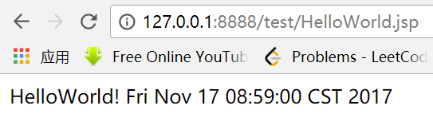
这样，调试时候只需要改jsp文件就可以了，相当便利。
tomcat下有一个文件夹work，存放jsp编译之后的.class文件和.java文件：
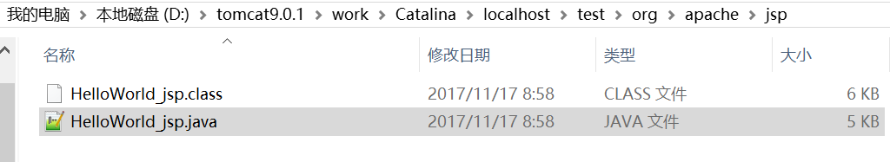
JSP编程-基本语法
JSP传统语法
- Declaration–声明
- Scriptlet–小程序段
- Expression–表达式
- Comment–注释
- Directives–指令
- Action动作指令
- 内置对象
JSTL
JSF
第二十五课. JSP基本语法_1
Declaration–声明
基本语法：<%! %>
说明：在此声明的变量、方法都会被保留成唯一的一份，直到JSP程序停止执行
例：
代码（AccessCounts.jsp）：
将这个jsp放在test目录下，访问网址：
http://127.0.0.1:8888/test/AccessCounts.jsp
不断刷新后得到页面是：
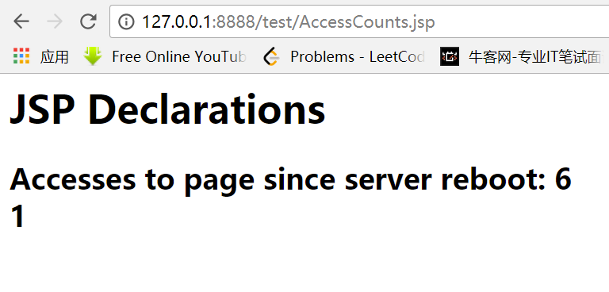
发现上面的数字每刷新一次就加1；而下面的数字总是1。
这是由于<%!后的变量为类的成员变量，类只初始化一次，所以accessCount每次都会在上次页面基础上加1；而<% 后的变量为局部变量，所以没刷新一次都会从0加到1。
验证这个结论的办法就是去查看tomcat的work目录下生成的.java文件。
发现一个问题，就是在页面刷新特别快的时候，类成员变量accessCount会回1，原因可能有两个：
第一个就是tomcat在将jsp转成servlet的对象时，可能做了一个池，里面放了好几个，第一个服务不过来的时候就调第二个，这时accessCount的值有好几个
第二个就是就是刷新的时候，可能上一个值修改完还没来得及reload，我们就又刷新了一次，这时刚好上一次进行了reload，所以值就修改回去了。
第二种情况可能性较大。
可以在<%! %>中声明方法，相当于类中方法。
Scriptlet–小程序段
基本语法：<%程序代码区%>
可以放入任何的Java程序代码
例：
注释格式：
代码（BGColor.jsp）：
访问网址：
http://127.0.0.1:8888/test/BGColor.jsp
发现背景色是白色的：
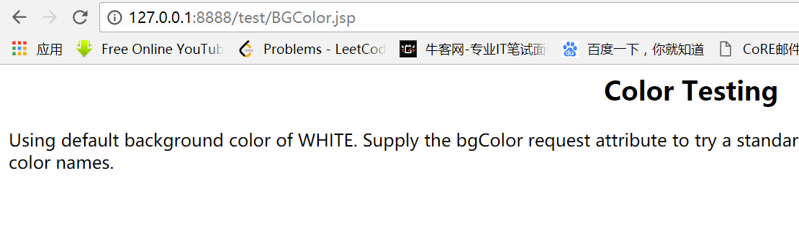
当传入参数以后，背景变色：
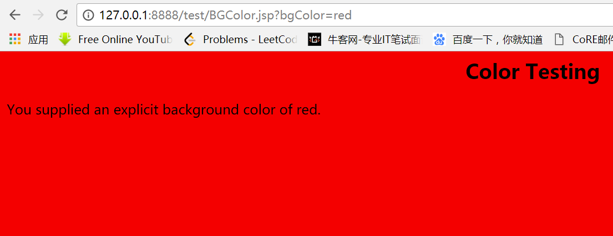
Expression–表达式
- 基本语法：
- <%=… …%>
- =后面必须是字符串变量或者可以被转换成字符串的表达式
- 不需要以;结束
- 只有一行
- 例：
- <%=“hello world”%>
- <%=i+1%>
- <%=request.getParameter(“name”)%>
例子（Expressions.jsp）：
访问地址得到：
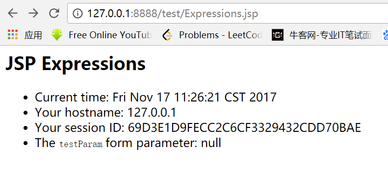
发现testParam是空的，这时候传入一个参数：
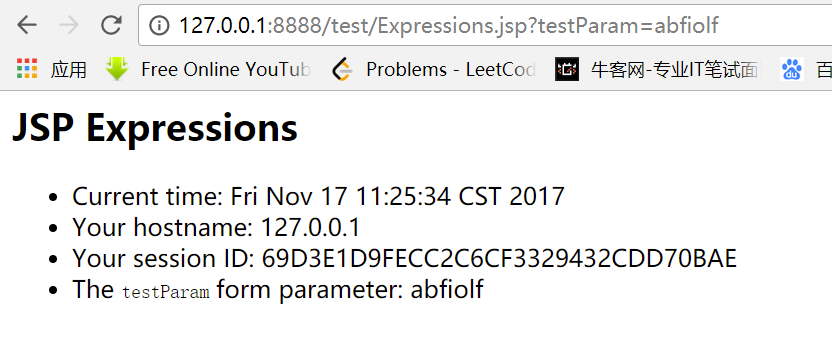
发现testParam将参数显示出来。
第二十六课. page_directive
Directive–编译指令
Directive(编译指令)相当于在编译期间的命令
格式：<%@Directive 属性=“属性值”%>
常见的Directive：
- page
- include
- taglib
Directive-page
- 指明与JSP Container 的沟通方式
- 基本格式：12345678910111213<%@page language=“script language”|extends=“className”|import=“importList”|buffer=“none|kb size”| --none:不缓冲，默认8ksession=“true|false”| --是否可以使用session，默认trueautoFlush=“true|false” --缓冲器是否自动清除，默认trueisThreadSafe=“true|false”| --默认false(永远不要设成true)info=“infoText”| --任何字符errorPage=“errorPageUrl”|isErrorPage=“true|false”|contentType=“contentTyepInfo”|pageEncoding=“gb2312”%>
例子：
TestDirective.jsp：
我们做一个测试，写一个TestErr.jsp的文件：
当我们把第一句<%@page errorPage="ErrPage.jsp"%>删掉以后，访问http://127.0.0.1:8888/test/TestErr.jsp
发现会报错：
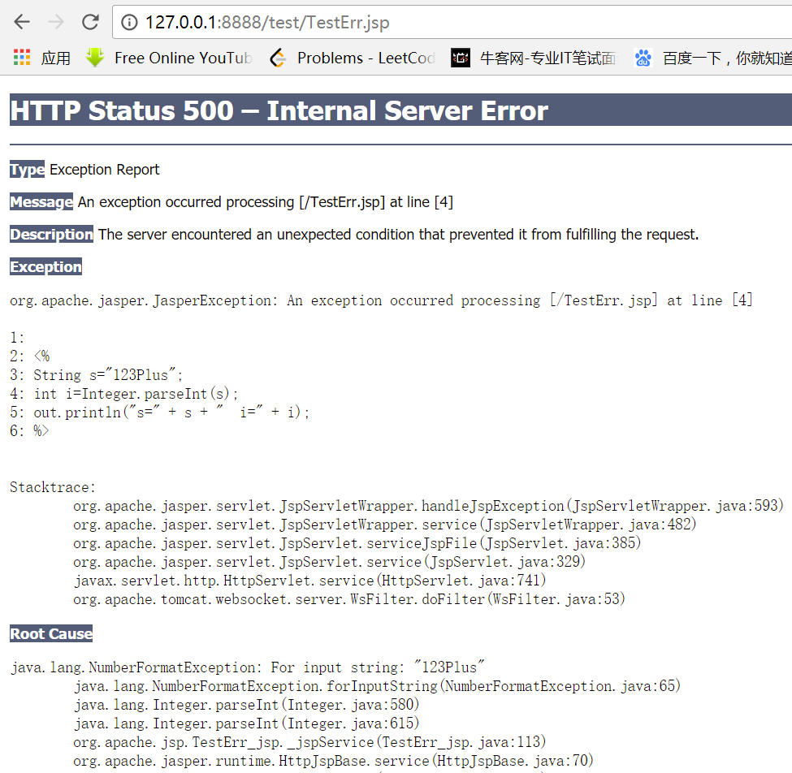
所以我们为了界面的友好，还是讲发生错误的页面指向了一个新页面，所以加上：<%@page errorPage="ErrPage.jsp"%>
并编写ErrPage.jsp文件：
重新访问：
http://127.0.0.1:8888/test/TestErr.jsp
页面显示为重新定向过的页面：
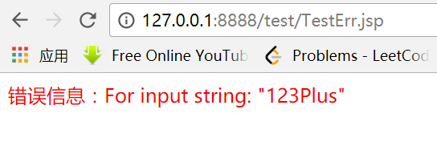
第二十七课. page_include
Directive–include
- 将指定的JSP程序或者HTML文件包含进来
- 格式：
- <%@include file=“fileURL%>
- JSP Engine会在JSP程序的转换时期先把file属性设定的文件包含进来，然后开始执行转换及编译的工作。(原封不动的把文件的代码copy到该位置,然后进行转换和编译,只生成一个java和class)
- 限制:
- 不能向fileURL中传递参数
不能abc.jsp?user=aaa
我们来测试一下这个功能：
我们写一个TestBar.jsp：
|
|
可以看到里面include了一个TitleBar.jsp，也就是在编译期间将TitleBar.jsp文件内容原封不动地传递进来。TitleBar.jsp内容如下：
|
|
然后访问地址：
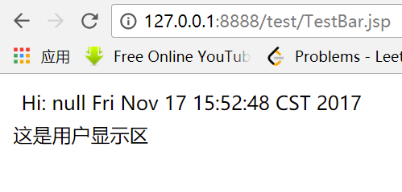
发现用户值为null。当我们将用户值传入时，界面才会予以显示：
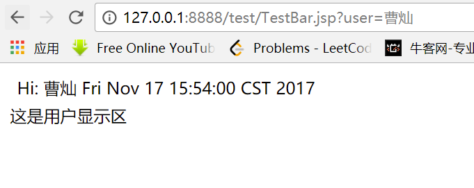
在编译指令中不能往里传参数，所以不能这么写：<TR><TD><%@ include file="TitleBar.jsp?user=ab" %></TD></TR>
第二十八课. jsp_include
Action
- Action(动作指令)在运行期间的命令
- 常见的:
- jsp:useBean
- jsp:setProperty
- jsp:getProperty
- jsp:include
- jsp:forward
- jsp:param
- jsp:plugin
- 嵌入applet
jsp:include/jsp:param
- 用于动态包含JSP程序或HTML文件等
- 除非这个指令会被执行到，否则它是不会被Tomcat等JSP Engine编译。
格式：
- jsp:param用来设定include文件时的参数和对应的值
- 例如:
- date.jsp/include.jsp
- Compute.html/Compute.jsp/divide.jsp/multiply.jsp
- 和编译指令include的区别
- include编译指令是在JSP程序的转换时期就将file属性所指定的程序内容嵌入，然后再编译执行；而include指令在转换时期是不会被编译的，只有在客户端请求时期如果被执行到才会被动态的编译载入
- Include不能带参数, 而
动态包含的文件和被包含文件用的是同一个request对象
我们来看一下上面说的例子：
先看include.jsp：
上面包含了两次date.jsp，一次通过静态方式，一次通过动态方式。
再看一下date.jsp：
即通过date.jsp获取当前时间，并转换成自己本地的字符串。
运行一下：
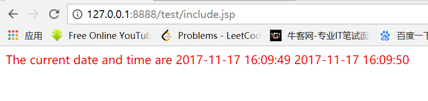
发现显示了两次这个时间。
接下来看第二个例子，关于计算器的例子。
先看Compute.html：
可以看到表单提交后执行动作，处理程序是Compute.jsp
再看Compute.jsp：
上面的代码中，先用两个字符串value1和value2将html中输入的两个数字进行赋值，然后通过
否则就是乘法，执行：<%@ include file="multiply.jsp"%>
看一下除法的jsp文件，也就是divide.jsp:
上面代码的value1也可以用v1，是可以跑通的。
再看乘法的jsp(multiply.jsp)：
|
|
要是把乘法代码中的value1改成v1，就会报错。因为v1是除法代码中的局部变量。
第二十九课. sp_forward_sendredirect
用于将一个jsp的内容传送到page所指定的JSP程序或者Servlet中处理(URL)
格式：
<jsp:param>用于指定参数和其对应的值
例如:
test.jsp
forward.jsp / forforward.jsp
forward1.jsp / forforward1.jsp(with parameters)
Forward的页面和forward到的页面用的是同一个request
与此相对应的是
response.sendRedirect
先看一下forward.jsp：
这个页面背景色是是红色。上面的代码执行的动作是，在执行forward.jsp时，页面会原封不动地跳转到forforward.jsp页面。
看一下forforward.jsp：
上面页面背景色是蓝色。
我们尝试访问以下forward.jsp：
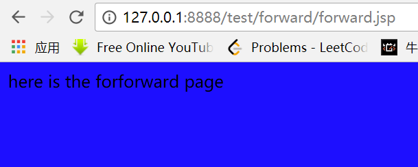
发现路径仍然是在forward.jsp，但是显示的却是蓝色的forforward.jsp
再看第二个例子（forward1/forforward1）：
先看forward1.jsp：
上面相当于做到forforward1.jsp?name=m&oldname=…
再看一下forforward1.jsp:
|
|
我们尝试访问forward1.jsp：
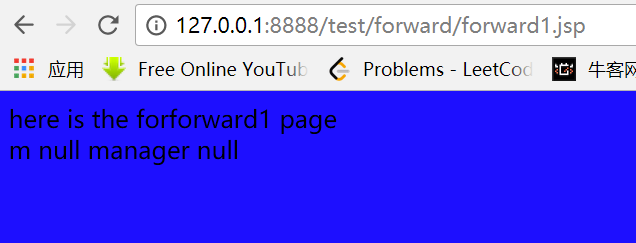
可以看到值都是null，现在给参数传值：
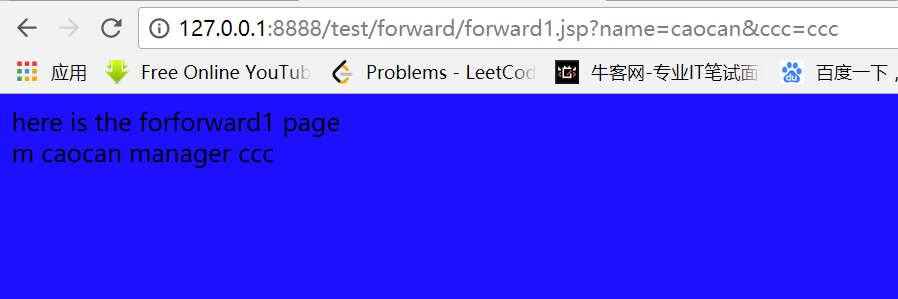
发现参数成功显示。
再看第三个例子(test.jsp和forforward.jsp)：
先看test.jsp：
当我们输入地址:
http://127.0.0.1:8888/test/forward/test.jsp
访问发现页面地址直接跳转到了
http://127.0.0.1:8888/test/forward/forforward1.jsp
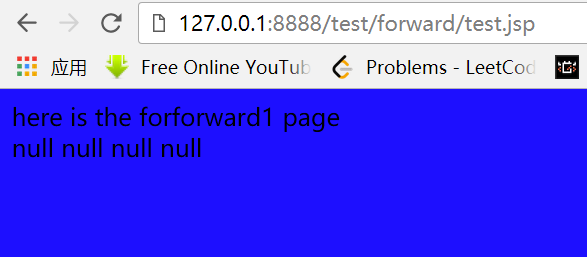
所以这里有一点结论：
- 使用同一个request
- forward后的语句不会继续发送给客户端
- 速度快
- 服务器内部转换，
- 可以传参数
- response.sendRedirect
- 是不同的request
- send后的语句会继续执行，除非return
- 速度慢
- 需要到客户端的往返，可以转到任何页面
- 可以传参数，直接写在url后面
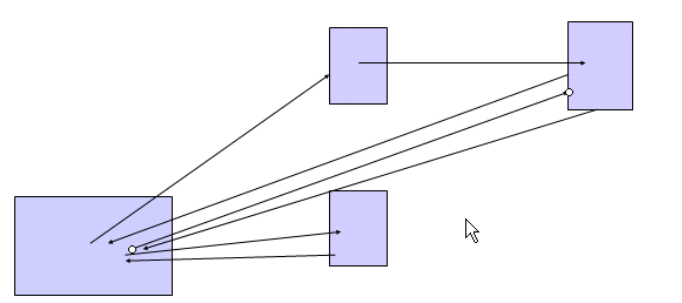
上面的是使用
下面的是使用response.sendRedirect，使用的是不同的request
跳转后的页面也可以传参数：
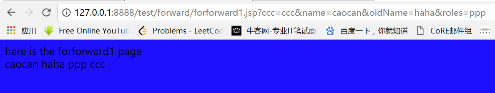